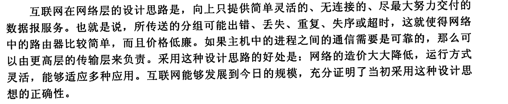
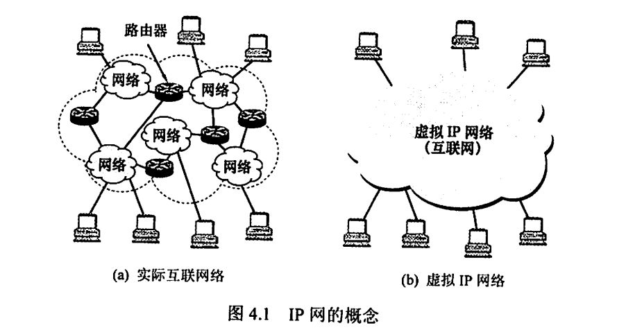
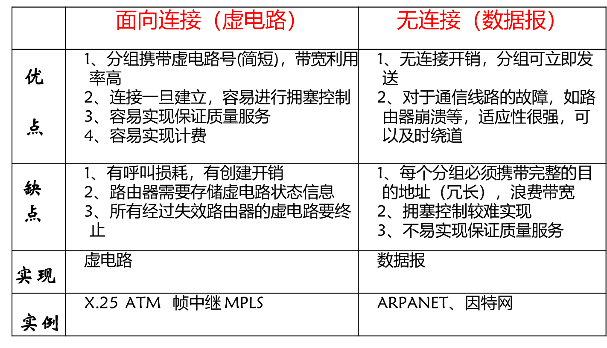

利用IP网解决异构问题服务模式指整个通信子网向传输层或资源子网提供的服务规范。 Internet团体（best-effortservice）无连接，差控流控等交给端主机实现 ，尽量使网络层简单快速 →数据报机制【无连接】数据报电话公司有连接 可靠的—>虚电路机制【有连接】虚电路 virtual circuit虚电路与数据报之间的比较路由器的内存与带宽建立虚电路的时间和地址解析的时间保证服务质量，子网避免拥塞拥塞控制